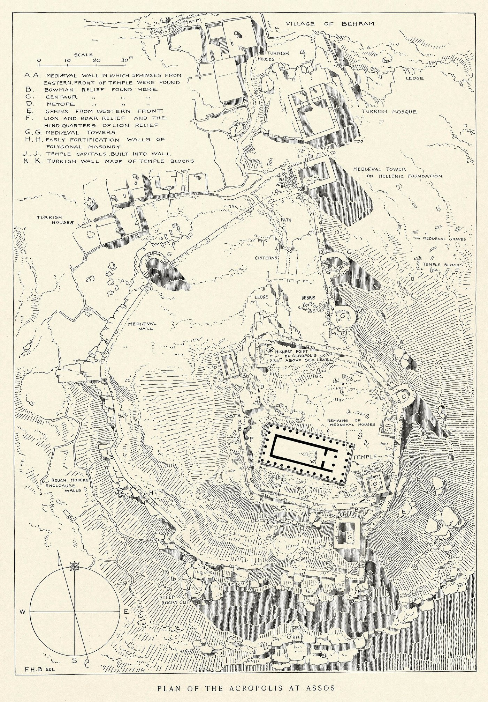

Assos, Ayvacık'ın Behramkale köyünün üzerinde, volkanik bir tepenin doruğundan Edremit Körfezi'ne ve Midilli Adası'na bakan büyüleyici bir antik kenttir. Tepenin en üst noktasındaki Athena Tapınağı, Anadolu'da Arkaik dönemden kalan Dor düzenindeki tapınakların ender örneklerinden biridir; ayakta duran sütunlarının arasından gün batımını izlemek, Ege'nin en unutulmaz deneyimlerinden biridir. Filozof Aristoteles'in bir dönem burada yaşayıp felsefe çalışmalarını sürdürdüğü bilinir. Kentin yamaçlardan limana kadar inen surları, agora, gymnasion, tiyatro ve yol kenarındaki lahitler, antik bir kentin dokusunu bütünüyle gösterir. Aşağıdaki küçük taş liman, gezinin sonunda deniz kenarında dinlenmek için idealdir.
⏳ Zamanda yolculuk
| O zaman | Bugün |
|---|---|
| Volkanik bir tepenin doruğunda, Edremit Körfezi'ne ve Midilli'ye bakan kent | Deniz manzaralı bir tepe kasabası |
| Athena Tapınağı: Anadolu'daki Arkaik Dor tapınaklarının ender örneklerinden | Kentin en tepesindeki simge yapı |
| Filozof Aristoteles bir dönem burada yaşadı | Ünlü bir düşünürün çalıştığı kent |
| Yamaçlardan limana inen surlar | Kenti baştan aşağı saran bir sur |
| Yol kenarındaki lahitler, agora, gymnasion ve tiyatro | Antik bir kentin bütün dokusu |
| Aşağıdaki küçük taş liman | Bir balıkçı limanı |
🎧 Assos'ta bir gün
Yıl MÖ 347. Filozof Aristoteles kente yeni gelmiş; öğrencileriyle birlikte doğayı ve canlıları incelemek için zaman ayırıyor.
Tepeye tırmanıp Athena Tapınağı'na ulaşıyorsunuz. Sütunların üstündeki taş kabartmalarda savaşan kahramanlar ve yaratıklar var; denizden esen rüzgâr sütunların arasından geçiyor.
Öğleden sonra agorada kalabalık var. Akşamüstü tiyatronun basamaklarından Midilli Adası'na ve batan güneşe bakıyorsunuz.
Bugün tapınağın bazı sütunları yeniden dikildi. Ancak taş kabartmaların çoğu 1838'de gemiyle Paris'e götürüldü ve Louvre Müzesi'nde sergileniyor.
Rakamlar tahminîdir; kaynaklar farklı değerler verir. Çizim temsilîdir, ölçekli değildir.
👩🏫 Öğretmenler için
Sınıf ya da okul gezisi için yazdırılabilir etkinlik kâğıtları; ikinci sayfada cevap anahtarı. Resmî yazı, veli izni ve gezi programını da buradan hazırlayabilirsiniz. Tüm kâğıtlar ▸
Ziyaret rehberi
🚌 Nasıl gidilir
Assos, Çanakkale'nin Ayvacık ilçesinde, Behramkale köyünün üstündeki volkanik tepededir. Ayvacık'tan Behramkale'ye dolmuş vardır; ören yeri köyün içinden yürüyerek çıkılır.
⭐ Kaçırmayın
- Tepedeki Athena Tapınağı'nın sütunları ve Midilli (Lesbos) adası manzarası
- 14. yüzyıl Hüdavendigar Camii
- Iyi korunmuş Helenistik surlar ve kent kapısı
- Nekropol ve lahitler
- Aşağıdaki küçük liman
🏺 Eserler ve buluntular
- Athena Tapınağı'nın arkaik frizlerinin bir kısmı Paris'teki Louvre'da, bir kısmı İstanbul Arkeoloji Müzeleri'nde ve Boston Güzel Sanatlar Müzesi'ndedir
👤 Önemli kişiler
- Filozof Aristoteles burada bir süre yaşayıp okul kurdu
- Stoacı filozof Kleanthes Assosluydu
- Hüdavendigar Camii Sultan I. Murad döneminde yapıldı
💡 İpuçları
Gün batımı Athena Tapınağı'ndan izlenir, en güzel saattir. Köy yolları dik ve taş döşemelidir; rahat ayakkabı giyin. Ardından limanda balık yiyebilirsiniz.
Kent planı

Plan: Francis H. Bacon · Public domain · Wikimedia Commons
Bu tarihî bir çizimdir; bugünkü kazı durumundan farklı olabilir.
Sık sorulan sorular
Assos Örenyeri nerede?
Assos Örenyeri, Ayvacık, Çanakkale konumundadır (Marmara). Yol tarifi için sayfadaki haritayı ya da yol tarifi düğmesini kullanabilirsiniz.
Assos Örenyeri ne kadar sürede gezilir?
Ortalama ziyaret süresi: 1,5–3 saat.
Assos Örenyeri için MüzeKart geçerli mi?
Bakanlığa bağlı müze ve ören yerlerinde genellikle geçerlidir.
Assos Örenyeri hangi döneme ait?
Assos Örenyeri, Arkaik / Helenistik dönemine tarihlenir.
Assos Örenyeri yakınında başka hangi yerler var?
En yakın kültür varlıkları: Apollon Smintheion Örenyeri (~19 km), Adatepe Zeytinyağı Müzesi (~24 km), Neandreia Antik Kenti (~26 km).
Assos Örenyeri için sesli anlatım var mı?
Evet. Bu sayfadaki Dinle düğmesiyle tanıtım metnini 7 dilde (Türkçe, İngilizce, Almanca, İspanyolca, Arapça, Çince, Hintçe) dinleyebilirsiniz.
♿ Engelsiz erişim
Bu yer için henüz doğrulanmış erişilebilirlik bilgisi yok. Bilgileri ziyaretçilerden ve müze yönetimlerinden topluyoruz; doğruladıktan sonra burada yayımlıyoruz.
Kültür ve Turizm Bakanlığına bağlı müze ve ören yerlerine engelli ziyaretçiler ve bir refakatçisi ücretsiz girebilir. Gişede engelli kimlik kartı ya da e-Devlet engellilik bilgisi gösterilir. Güncel koşulları gitmeden önce müzeden doğrulayın. Engelsiz erişim rehberi →
♿ Erişim bilgisi gönderin
İlgili rehberler
Fotoğraflar
Yakında konaklama ve yemek
İşletmenizi burada göstermek ister misiniz? Reklam verin